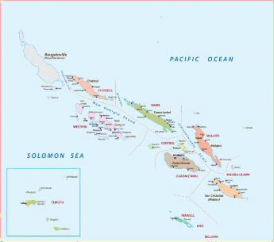
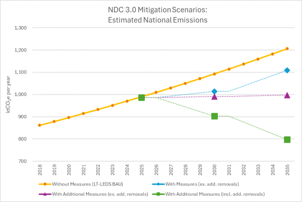

Climate Change Division
Ministry of Environment, Climate Change, Disaster Management and Meteorology
Climate change is a major concern for the Solomon Islands, as it presents an ever increasing threat to our wellbeing, economic livelihood, environment and biodiversity. As a Small Island Developing State (SIDS) and Least Developed Country (LDC), we bear the brunt of a crisis we did not cause, noting that our contribution is less than 0.0015% of global greenhouse gas emissions. Regardless of our negligible contribution to global emissions, we remain committed to demonstrate leadership and commitment in global climate action.
In submitting our Third Nationally Determined Contribution (NDC 3.0) to the United Nations Framework Convention on Climate Change (UNFCCC), the Solomon Islands reaffirms its strong commitment to the Paris Agreement. This updated NDC is aligned with Article 4 of the Agreement and relevant COP decisions, reflecting our ongoing dedication to reduce emissions, build resilience, and promote climate justice. It also anticipates the enhanced transparency requirements under the Agreement, while taking into account our national capacities and circumstances.
Our NDC 3.0 outlines realistic and ambitious mitigation targets under both "with measures" and "with additional measures" scenarios-projecting an emissions reduction of up to 34% below Business-as-Usual levels by 2035 when additional removals from afforestation and reforestation are considered. These efforts are backed by our continued stewardship of vast existing forests inter alia, which we presume will remain vital carbon sinks moving well into the future, As indicated in our Third National Communication, we have significantly greater annual carbon sequestration in our existing forests than GHG emissions from other sectors.
On adaptation, the Solomon Islands is advancing work towards a comprehensive National Adaptation Plan by 2028. We have already identified key sectors vulnerable to climate impacts-inclusive of water and sanitation, health, agriculture, fisheries, infrastructure, and education-and initiated adaptation planning and action across all nine provinces. However, the increasing frequency and intensity of extreme weather events continue to inflict loss and damage, further exacerbating our development challenges.
Despite our unwavering national commitment, the Solomon Islands' ability to meet the goals set out in this NDC 3.0 remains heavily dependent on sustained and scaled-up international support-particularly in the form of climate finance, capacity building, and technology transfer. Without this, transformative progress across all sectors will remain limited.
As Minister responsible for climate change, I proudly endorse and present this Third Nationally Determined Contribution on behalf of the Solomon Islands Government. We stand in solidarity with our Pacific Islands neighbors and other vulnerable nations, calling on the international community to match ambition with action, and to deliver climate justice for those most affected, but least responsible.
Honourable Polycarp Paea Minister
Ministry for Environment, Climate Change, Disaster Management and Meteorology Solomon Islands Government
Acknowledgement
The Solomon Islands Government would like to acknowledge the support of, and share our appreciation to, the Regional Pacific NDC Hub and its donors, Deutsche Gesellschaft für Internationale Zusammenarbeit (GIZ), the Global Green Growth Institute (GGGI) and the United Nations International Children's Emergency Fund (UNICEF) for supporting the development of this NDC and related national climate change planning used in its development
BAU Business-as-Usual
COP Conference of the Parties
FRL Forest Reference Level
GHG Greenhouse Gases
ICE Internal Combustion Engine
LDC Least Developed Country
LT-LEDS Long-Term Low Emissions Development Strategy MAL Ministry of Agriculture and Livestock
MECDM Ministry of Environment, Climate Change, Disaster Management and Meteorology MEHRD Ministry of Education and Human Resources Development
MOFR Ministry of Forestry and Research MHMS Ministry of Health & Medical Services
MID Ministry of Infrastructure and Development MLHA Ministry of Lands, Housing and Survey
MMERE Ministry of Mines, Energy & Rural Electrification
MNPDC Ministry of National Planning and Development Coordination MoFT Ministry of Finance and Treasury
MPGIS Ministry of Provincial Government and Institutional Strengthening MWYCFA Ministry of Women, Youth, Children & Family Affairs
NAP National Adaptation Plan
NDC Nationally Determined Contribution OBM Outboard motors
REDD+ Reducing emissions from deforestation and forest degradation in developing countries SIDS Small Island Developing State
SIMS Solomon Islands Meteorological Service SIMA Solomon Islands Maritime Authority SIPA Solomon Islands Port Authority
UNFCCC United Nations Framework Convention on Climate Change
The Solomon Islands acknowledges the urgent need to address climate change, noting that global efforts in mitigation, adaptation, and finance have been insufficient, with temperatures surpassing 1.5°C above pre-industrial levels by 2024. As a Small Island Developing State (SIDS) and Least Developed Country (LDC), the Solomon Islands emitted less than 0.0015% of global GHG emissions in 2018, achieving net- positive status when removals are considered.
Committed to the Paris Agreement, the Solomon Islands submits its third Nationally Determined Contribution (NDC 3.0) to the UNFCCC before COP30. This submission complies with Article 4 of the Paris Agreement and relevant decisions, considers enhanced transparency framework requirements and accounts for national circumstances.
Recognising our national circumstances, just transition and continued need for support to achieve a low emissions transition, the Solomon Islands expects that removals from existing forests will continue to far exceed GHG emission past 2035. Under this NDC the Solomon Islands is committed to reducing GHG emissions in 2035 without additional removals by 97.1 ktCO2e (-8%) under a with measures scenario, and 208.7 ktCO2e (-17%) under a with additional measures scenario. Considering additional removals from planned afforestation/reforestation projects by 2035, the reduced GHG emissions plus removals under the with additional measure scenario is 408.7.6 ktCO2e (-34%). All scenarios consider a Business-as-Usual baseline where 2018 GHG emissions are the base year for projections, excluding removals.
The Solomon Islands recognises the need for people and environments to adapt to climate change across its nine provinces. Although the National Adaptation Plan is in preparation and expected by 2028, initial core areas identified for adaptation include infrastructure, water & sanitation, agriculture, fisheries, forestry, health, education, and meteorological services. While noting that extreme weather events, intensified by climate change, already cause significant loss and damage, the Solomon Islands' geography and remoteness amplify the impacts on livelihoods and settlements despite mitigation and adaptation efforts.
Stakeholder engagement is central to addressing climate change in the Solomon Islands, involving government ministries, civil-society groups, NGOs, and development partners. These stakeholders contributed to the NDC development process and are involved in implementing climate actions, from project design and impact assessment to approvals and direct implementation. Stakeholders have outlined eleven activities to involve women, children, and youth in climate actions, including education, advisory groups, project participation, and progress indicators.
Since 2015, it is clear the national climate action progress in the Solomon Islands has been largely supressed due to limited international support of finance, capacity building, and technological resources. As an LDC and SIDS, the Solomon Islands needs this extensive support to progress further in a transformative way in the areas of transparency, mitigation, adaptation, and for addressing loss and damage. The government works tirelessly within its means to coordinate with ministries and partners to identify and structure support needs, including by utilising a newly developed iMRV Tool software. However, current outcomes are constrained to mostly high-priority areas, and the government requires further efforts to address the broader climate actions and support needs across sectors to ensure nationwide transformation.
The Solomon Islands recognises the global urgency and ambition for combating climate change, and that global progress on many fronts (mitigation, adaptation, finance etc.) has been insufficient as the average global temperature has already reached past 1.5°C from pre-industrial levels for the first time in 2024.1 The Solomon Islands is a SIDS and a LDC that contributed to less than 0.0015% of global GHG emissions without including removals in 2018 (the latest GHG inventory year), and when including removals, has a net-positive status.
To combat the common global problem of climate change and to protect our people, natural and built environments, the Solomon Islands is committed to the Paris Agreement and values its current provisions and decisions. In this context, the Solomon Islands submits this third Nationally Determined Contribution (NDC 3.0) to the secretariat of the United Nations Framework Convention on Climate Change (UNFCCC) before the thirtieth session of the Conference of the Parties (COP30). This NDC is submitted in accordance with Article 4 obligations under the Paris Agreement (1/CP.21) and following various decisions, including guidance related to mitigation (4/CMA.1), while taking into consideration the transparency framework (18/CMA.1) as well as national circumstances and considerations.

The Solomon Islands is an archipelago located in the southwest Pacific, consisting of 997 islands with 29,000 km2 of land, within 1.58 million km2 of Exclusive Economic Zone and ocean space. The Solomon Islands has a projected population of 798,000 people in 2025 spread across 90 inhabited islands, resulting in one of the lowest population densities globally.2 The islands are separated by significant distances and mountainous terrain, which poses challenges for connectivity and development. While a recent study shows that five vegetated reef islands have been lost in the Solomon Islands due to climate change related sea-level rise and wave exposure, with six others experiencing severe shoreline recession and houses washed into the ocean.3
The Solomon Islands is endowed with natural resources but is highly vulnerable to hydrometeorological and geological hazards.
Figure 1: General map of the Solomon Islands
Environmental degradation is evident in areas that have hosted or currently hosting economic activities such as logging and mining. Unplanned urbanization has led to challenges like poor waste management, growth of squatter settlements, and construction on marginal lands prone to landslides and flooding. The
Solomon Islands is set to graduate from LDC category in 2027 after its postponement in 2024 due to the impacts of COVID-19 and civil unrest.4
The economy is primarily based on forestry, fisheries, and service sector, with a minor contribution from mining and edible oils industries. The country is heavily dependent on overseas development assistance and is vulnerable to global economic trends and shocks. Subsistence economy supports about 80% of the population, providing income and fulfilling social and cultural obligations. Basic social services like health and education are state-controlled and reliant on funding from development partners. Current efforts by the government and development partners also work to address social, gender, and age inequities.
The climate in the Solomon Islands is influenced by various factors, including trade wind regimes, the South Pacific Convergence Zone, and the El Niño Southern Oscillation (ENSO). The climate is hot and humid year- round, with an average temperature of 27°C. There are two distinct seasons: a wet season from November to April and a dry season from May to October. Rainfall distribution is affected by orography, with higher altitudes receiving more rainfall. Observed climate trends show increasing surface temperatures and rising sea levels, with ocean acidification also increasing.
Climate change projections for the Solomon Islands indicate increases in land and sea surface temperatures, rainfall, sea level, and ocean acidification. These changes will adversely affect biophysical, natural, and human systems. Projections for 2030 and 2055 under high global GHG emissions scenarios show significant increases in temperatures, rainfall, and sea levels. While tropical cyclones are expected to be more intense, they are also less frequent. This means that the Solomon Islands is and will continue to be highly vulnerable to climate change, with impacts already being felt across various sectors. Extreme weather events can wipe out development gains, as seen in the 2014 flash flood that caused damages equivalent to 9.2% of the GDP. The country is in a constant mode of recovery from climatic disasters, with adaptation and addressing loss and damage beyond its capacity. Climate change impacts are linked to other non-climate hazards and development challenges, highlighting the need for comprehensive and integrated responses nationwide.5
Measurable progress has been made on the planning and policy side for the transformational change needed to significantly reduce GHG emissions in the Solomon Islands. This progress includes the completion of the National Climate Change Policy 2023-2032, Long-Term Low Emissions Development Strategy (LT-LEDS), NDC Investment Plan, the National iMRV Software, along with various sectoral and ministerial plans that include climate actions across government.
The LT-LEDS and NDC Investment Plan focus mitigation actions on the sectors with the highest GHG emissions in the Solomon Islands. These include Energy Industries (electricity), Transport (land and maritime), Agriculture (livestock), Solid Waste Disposal, and Forestry (removals). The updated national inventory estimates that GHG emissions were 861.5 ktCO2e (excl. removals) in 2018. With 77.8 ktCO2e coming from Energy Industries, 275.7 ktCO2e from Transport, 114.3 ktCO2e from Agriculture (livestock), and 363.1 ktCO2e from Solid Waste Disposal.6 While the Third National Communication estimates that forest related removals are -26,267.7 ktCO2 in 2018, which is a factor of 30 to 1 (removals to emissions).
Progress to significantly reduce national GHG emissions and account for these has been slow in the Solomon Islands due to limited national capacity, available technologies & practices, and financing. As of early 2025, it is estimated that 3.3 ktCO2e/yr (excl. removals) have been mitigated by mainly implementing renewable energy in the Solomon Islands since 2015. Though additional mitigation indeed may have occurred during this period, current monitoring, reporting, and verification practices do not allow for capturing all the information needed to account for the additional mitigation. It is noted that the magnitude of removals from existing forests, which are not included in the NDC commitments, is expected to continue exceeding GHG emissions from other sectors' activities, thus allowing for a continued 'net-positive' balance of emissions and removals in the country through 2035.7
Following the LT-LEDS work, this NDC utilises the latest available GHG inventory year of 2018 as the base year for the projection of Business-as-Usual (BAU) national GHG emissions (excl. removals) to target reference year of 2035. The projection uses an annual growth rate of 2% based on a combination of both expected population growth and increased economic activity in sectors.
In early 2025, the Government and national stakeholders undertook a bottom-up approach for each sector included in this NDC to define and catalogue specific implemented, financed, and currently planned mitigation projects under a just transition between 2015 and 2035. Where, the expected GHG emission reductions of each project are estimated based on internationally accepted methodologies and national circumstances. These results allowed for the estimation of NDC commitments under the three emissions scenarios that are applicable to ETF progress reporting and guidance, as shown in Figure 2 and Table 1. Notably without measures (e.g., BAU baseline), with measures (e.g., unconditional mitigation), and with additional measures (e.g., conditional mitigation). In addition, a summary about each applicable sector is also provided in the following sub-sections, with additional information found in Annex A (the ICTU table) and Annex B (key assumption) of this NDC. Other publicly available information can be found at the Solomon Islands iMRV tool website (see link in Section 8).

Figure 2: Graph of NDC 3.0 GHG Mitigation Scenarios
Table 1: NDC 3.0 GHG Mitigation Commitments
|
Reference, Baseline and Mitigation |
Unit |
2025 |
2030 |
Target 2035 |
|
Without Measures (excl. removals*) |
||||
|
LT-LEDS BAU Baseline |
ktCO2e/yr |
989.6 |
1,092.6 |
1,206.4 |
|
With Measures Scenario (excl. additional removals**) |
||||
|
Reduced GHG emissions |
ktCO2e/yr |
-3.3 |
-78.7 |
-97.1 |
|
Expected GHG emissions level |
ktCO2e/yr |
986.4 |
1,014.0 |
1,109.3 |
|
Change from LT-LEDS BAU |
% |
-0.3% |
-7% |
-8% |
|
With Additional Measures (excl. additional removals**) |
||||
|
Reduced GHG emissions |
ktCO2e/yr |
-3.3 |
-101.5 |
-208.7 |
|
Expected GHG emissions level |
ktCO2e/yr |
986.3 |
991.1 |
997.7 |
|
Change from LT-LEDS BAU |
% |
-0.3% |
-9% |
-17% |
|
With Additional Measures (mitigation incl. additional removals***) |
||||
|
Reduced GHG emissions |
ktCO2e/yr |
-3.3 |
-189.4 |
-408.7 |
|
Expected GHG emissions level |
ktCO2e/yr |
986.3 |
903.2 |
797.7 |
|
Change from LT-LEDS BAU |
-0.3% |
-17% |
-34% |
* Values for national GHG emissions without accounting for forestry carbon removals
** Values for GHG mitigation from actions without accounting for additional forestry carbon removals projects
*** Values for GHG mitigation from actions with accounting for additional forestry carbon removals projects
As a SIDS and LDC, the Solomon Islands is still addressing suppressed demand for access to electricity by households and businesses across its many inhabited islands. As of 2019, only 50% of urban households had access to grid-connected electricity and only 4% of rural households, although 81% of all households do have solar-powered lighting via small portable units.8 The sector is governed by the National Energy Policy 2019-2030 and National Energy Policy Framework, and regulated under the Electricity Act of 1969 and the Electricity Amendment Bill 2023 where most of sector planning is coordinated and implemented by the Ministry of Mines, Energy & Rural Electrification (MMERE) and the Solomon Islands Electricity Authority/Solomon Power in collaboration with other ministries.
The Solomon Islands is also heavily dependent on fossil fuels for electricity generation, where 99% of electricity on the grid is generated by diesel power.9 There are currently only two ports where diesel and other fuels are imported and distributed from across the different provinces. This system means that the domestic fuel supply is very expensive, with the current (2025) commercial fuel price in Honiara reaching SBD 10.00 per litre [USD 1.20 per litre] and in the furthest remote provinces up to SBD 25.00 per litre [USD 3.00 per litre]. In urban areas, such as Honiara, this leads to a grid-connected power price up to SBD 7.60 per kWh [USD 0.91 per kWh], one of the highest prices in the Pacific region.10
The Solomon Islands has a well-documented potential for renewable energy electricity generation from hydro and solar sources, and the Government has plans to increase renewable energy electricity generation across the country while increasing access to electricity and reducing the cost of electricity. This planned increase in capacity requires significant capacity building, technology transfer & assistance, and finance support to reach the planned goals. As a part of the development of this NDC, it is estimated that 3.7 MW of grid-connected and off-grid renewable capacity has been installed prior to 2025, leading to 3.3 ktCO2e of annual mitigation. There is an additional 20 MW that is financed and/or under construction by the end of 2030, and an extra 35 MW that is planned at the concept and unfinanced stages that may be implemented by the end of 2035 with additional support. When supported and fully implemented, these planned actions are expected to mitigate 61.6 ktCO2e in 2035 (e.g. with measures excl. additional removals) and up to 139.9 ktCO2e in 2035 (e.g. with additional measures excl. additional removals).
Land transport in the Solomon Islands is primarily regulated by several legislation bills, including the Planning and Development Act, Town and Country Planning (amendment) Act 2017, Traffic Act 1968, Road Transport Act (Amendment) 2009, and the Goods Tax Act 2003. The primary functions of governance are undertaken by the Ministry of Infrastructure Development (MID) and the Ministry of Finance and Treasury (MoFT). Sectoral planning is based on the National Transport Plan 2017 - 2036 and the Medium-Term Transport Action Plan 2021-2025.
Nearly all vehicles in the Solomon Islands are Internal Combustion Engine (ICE) vehicles, and well over 7,580 vehicles are registered to households and the private sector as of 2024 (for driving).11 All of these vehicles are imported and are mostly second-hand, less fuel-efficient vehicles, so current transitional planning focuses on actions for increasing the use of fuel-efficient ICE vehicles along with introducing sustainable biofuels and different types of electric vehicles where renewable energy is available. As of 2025, there are no systematic land transport projects for GHG mitigation implemented in the Solomon Islands, but the NDC Investment plan highlights three concept-stage projects within these actions, which need extensive capacity building, technology transfer & assistance, and finance support. When supported and fully implemented, these planned projects that include more efficient vehicles using import age limits, e-mobility for buses, and biofuel for ICE vehicles are expected to reduce GHG emissions from the sector by up to 14.1 ktCO2e in 2035 (e.g. with additional measures excl. additional removals).12
The maritime sector is the transport lifeblood of the Solomon Islands as it connects people and economy throughout the many inhabited islands of the country. In the Solomon Islands, the maritime transport sector is predominantly divided into two parts: shore-side infrastructure and vessels & boats. Planning and regulation in the sector are predominantly based on the National Development Strategy 2016-2035, the National Ocean Policy 2018, National Transport Plan 2017-2036, and draft Solomon Islands Plan for Sustainable Maritime Future. Shore-side infrastructure is managed by MID and the Solomon Islands Port Authority (SIPA), while vessels & boats are administered by the Solomon Islands Maritime Authority (SIMA).
GHG emissions within the maritime sector fall within the fossil fuel use from vessels & boats, with minor emissions coming from port operations. Previous assessments for the sector, including the LT-LEDS and the SIMA Maritime Greenhouse Gas Emissions Rapid Assessment, indicate that the primary emissions sources are various types of shipping vessels (120+) and small crafts that include 10,100 outboard motors (OBMs). As of 2025, there are no systematic maritime transport projects for GHG mitigation implemented in the Solomon Islands, but the NDC Investment plan highlights five concept-stage projects within the sector, which need extensive capacity building, technology transfer & assistance, and finance support. They include transition to more fuel-efficient and electric OBMS, increased fuel efficiency for shipping vessels, renewable energy propulsion for shipping vessels, and a green ports initiative. When supported and fully implemented, these planned projects are expected to reduce GHG emissions from the sector by up to 16.6 ktCO2e in 2035 (e.g. with additional measures excl. additional removals).13
Forests are the most significant land-based natural resource in the Solomon Islands, which covers 90% of the country's 2.8 million hectares of land area, and in 2017 provided an estimated 65% of export earnings and 20% of state revenues.14 Noting that the decline in mangrove forests was estimated to be 27% between 1970-200015, but no further assessments are available; other than mangroves, which are estimated to currently make up 1% of all forest cover.16 The status of total forest cover is estimated to have slightly decreased between 2011 to 2018 by 0.16%.17
The Ministry of Forestry and Research (MOFR), following the National Forest Policy 2020, Forest Resources and Timber Utilization Act 1969, and Protected Areas Act 2010, focuses on engaging the sector, community and NGO involvement in forest use and conservation. Activities managed by MOFR include the REDD+ mechanism, developing new national strategy & planning, forest reference level (FRL) & information development, and inclusion of safeguards. Including enhancement of the improved sustainable forest management policy (2002) through enforcement of regulatory measures as per code of logging practice, license conditions and effective monitoring of logging compliance.
MOFR is looking forward to the enactment of the draft Forest Bill (amendment) which will enhance sustainable forest regulations and sectoral policy in the Solomon Islands, this amendment will enable potential avenues for development of new regulations which should support existing and potential sustainable strategies and institutional governance of forest resources in Solomon Islands. This will support REDD+ and other efforts need to be enhanced in the forestry sector, where future support is needed to address an updated FRL, develop new legislation, increase compliance monitoring, and improve practices for sustainable forest management.
Outside of REDD+ activities, the sector has planned additional actions for afforestation and reforestation defined in the NDC Investment Plan that include: Promotion of Community Forestry for Livelihoods, Ecosystem-Based Restoration of Degraded Forest Land Area, and Increasing the Growth of Mangrove Forests. When supported and fully implemented, these planned additional actions are expected to increase carbon removal in the forestry sector by up to 200 ktCO2e in 2035 (with additional measures incl. additional removals).18
The solid waste management sub-sector is regulated under the Environment Act (Amended) 1998 and is being revised under the work of the Environment Bill 2023, and is driven by the National Waste Management and Pollution Control Strategy 2017-2026, which is administered by MECDM. This strategy highlights three main challenges in the sub-sector: lack of land for engineered landfills, limited financial resources, and limited human resources. Although 82% of the population lives outside Honiara (the capital area), waste management in rural areas is less centralised and falls under provincial and community regulation.
In addressing these challenges, MECDM and provincial governments support activities to encourage mitigation actions such as developing and implementing technologies and infrastructure to minimise GHG emissions, promoting sustainable business and farming practices, and encouraging relevant renewable energy technology in waste management. The Solomon Islands State of Environment Report 2019 recommends establishing frameworks to limit open waste burning, enhancing disposal practices including composting, conducting surveys, and using renewable energy.19 The National Infrastructure Priority Pipeline 2023 includes projects like constructing the new Honiara Solid Waste Landfill and planning provincial landfills. Though national planning and local stakeholder engagement have been effective in the targeted areas of past activities, the solid waste management sub-sector is in desperate need of additional capacity building, technology assistance, and financing support.
A new landfill for the greater Honiara area is financed and currently in the design and later implementation stage, and will include a landfill gas extraction and utilisation system to reduce methane emissions.20 There is planned but not yet supported projects for rural areas, including Lata and Buala areas, where new landfills and aerobic composting are planned.21 When supported and fully implemented, the financed and planned projects are expected to reduce GHG emissions from the sector by 35.4 ktCO2e in 2035 (e.g. with measures excl. additional removals) and up to 35.8 ktCO2e in 2035 (e.g. with additional measures excl. additional removals).
Agriculture livestock manure management in the Solomon Islands is regulated under the Agriculture and Livestock Act 1935, the Biosecurity Act 2013 and is driven by the Agriculture Sector Growth Strategy and Investment Plan 2021-2030 and the Agriculture and Livestock Sector Policy 2015-2019. The sub-sector is administered by the Ministry of Agriculture and Livestock (MAL).
There are over 131,000 households in the Solomon Islands that participate in agricultural practices, with 25% focusing only on subsistence and 57% on a combination of subsistence and for sale; of this total, 47% raise livestock. Most of the household livestock is raised in Malaita (34%) and Guadalcanal (22%). The households raise over 464,000 livestock consisting of Poultry (65%), Pigs (32%), Cows (1%), Goats (2%), and Horses (0.3%).22 There are no clear indications of how many livestock fall within commercial operations (e.g. businesses), and it is assumed that household numbers include commercial numbers on the farm. The Agriculture Sector Growth Strategy and Investment Plan 2021-2030 has strong components for enhancing the livestock sector review, rehabilitating government farms, business models for scaling up production, partnerships, and enhancing data. The focus is on medium and large-scale producers.
Though this sub-sector has implemented a few policy actions for biogas generation in manure management, there is an extensive gap in national capacity, technology availability, and financing to support actual implementation and transformational use of tried-and-tested industrial and community/household biogas technology beyond a few minor pilot projects. There are planned but not yet supported (e.g. capacity building, technology transfer and finance) actions for introducing and implementing at scale these systems that also improve community sustainability. When supported and fully implemented, these planned actions are expected to reduce GHG emissions from the sector by up to 2.4 ktCO2e in 2035 (e.g. with additional measures excl. additional removals).23
The Solomon Islands reaffirmed its commitment to implementing Article 6 of the Paris Agreement, which establishes a global framework for international cooperation on carbon markets and pricing through three main platforms, namely Voluntary cooperative approaches (Article 6.2); Facilitating project-based carbon credits (Article 6.4) and Market Based Approaches (6.8). In early 2025, the implementation of Article 6 mechanisms is only in its infancy in the Solomon Islands and will require significant international support to prepare and implement institutional policies and governance, initiatives to enhance national expertise in carbon market mechanisms, and advanced technology to improve monitoring, reporting, and verification processes along with international reporting.
Given the expected impacts of climate change across the natural environment, livelihoods and economy, adaptation is a critical, and maybe the most important, element for climate actions and sustainable transition for the Solomon Islands. It is also the area of climate change that requires the most amount of support, has the least amount of available supporting information, and the lowest depth of sectoral planning. In 2025, the Solomon Islands is starting the initial phase, and seeking further support, for a 3-year programme to prepare a detailed National Adaptation Plan (NAP) and related investment plan for priority sectors and adaptation projects. The results of the NAP programme are expected to be ready in 2028 and be included in the NDC 4.0 for submission in 2030.
In the meantime, the Solomon Islands has identified initial adaptation needs in the Third National Communication and has initially worked across ministries to map the context and initial set of core areas for addressing adaptation in the country, which will be expanded under the NAP work. These areas are briefly discussed in the following sub-sections.
The operation, maintenance and further development of infrastructure are crucial to the economic and social development of the Solomon Islands. Climate change likely represents the most critical risk to infrastructure in the Solomon Islands and the Pacific region, causing significant impacts on the infrastructure that supports transport, energy, communications, food systems, health, the built environment, and human settlements, among many others.
In the Solomon Islands, most current infrastructure has been constructed without serious consideration of the impacts of climate change, such as sea level rise, coastal erosion and severe weather conditions. Lack of nationally appropriate data and information has hindered the development of nationally appropriate design standards and practices in several sectors that take climate change and local conditions into account. Though it is noted that a new National Building Standard Bill is in the process of approval which will help strengthen regulation and resilience in the built environment. This context is further exacerbated by a gap in national human capacity and know-how to address the needed design, regulation and supervision challenges faced. While the economic conditions as an LDC mean that the government and the private sector struggle to finance more than the minimum activities needed to address climate change related infrastructure improvements. Amongst others, past activities addressed by key ministries (e.g. MID, MMERE, and MECDM) include national appropriate supporting data and information about hydrology, weather and GIS24, some integrated community vulnerability assessments25, and climate resilience for ports26 and solid waste management27.
The Ministry of National Planning and Development Coordination (MNPDC) and MID, MECDM, MMERE, MHMS, MAL, and MEHRD are the ministries leading much of the infrastructure development in the Solomon Islands, with other ministries contributing. The National Infrastructure Priority Pipeline 2023 highlights 140+ planned national infrastructure projects with SBD 18.7bn (USD 2.2bn) in funded, partially funded and unfunded investments.28 All of which likely need an unquantified determination of support needs for climate proofing this built infrastructure that crosscuts other areas of adaptation. In addition, there are three concept stage adaptation and crosscutting projects that include infrastructure and related resilience activities highlighted in the NDC Investment Plan, with an investment need of SBD 98m (USD 11.7m).29
The government of the Solomon Islands recognises that access to easily available fresh and safe water and appropriate sanitation facilities is a critical element for healthy and disease-free households in the Solomon Islands, as well as the fact that the lack of adequate water and sanitation can significantly reduce social and economic development. Given the geographical context of the Solomon Islands, various communities face very different challenges regarding water and sanitation. Water and sanitation can be significantly impacted by sea level rise and severe weather in the Solomon Islands, making groundwater resources periodically or permanently undrinkable and damaging sanitation facilities for washing and toilets for different communities. In addition, the lack of easy access to water and sanitation disproportionately affects children and women, when considering hygiene, privacy, safety and the physical efforts and time needed to access water. In the social services area, national statistics indicate that 81% of schools lack basic sanitation services, only 31% have basic water services, and just 8% have access to basic hygiene services.30 While 22% of open health facilities do not have water services and 49% without functioning toilets.31
To help address these challenges, the government has established the National Water Resources and Sanitation Policy 2017 (WATSAN), which is an operational framework to develop and guide the process of installing water supply and sanitation for urban and rural communities. The governance of the WATSAN falls under the responsibility of MMERE, and its crosscutting implementation occurs in collaboration with at least ten other ministries.32 The government has developed water and sanitation standards for education facilities33, in strategic planning for rural areas34 and recently completed climate risk assessment for WASH across the provinces.35 However, significant additional efforts and support are needed to improve safe water and sanitation access for urban areas and rural communities across the Solomon Islands. Noting that the additional efforts can be guided by the MECDM lead WASH climate rationale that provides a robust explanation of the climate change impacts, risks, and vulnerabilities, and how a series of proposed actions will mitigate and manage risks and vulnerabilities to achieve climate resilient WASH services for all people in Solomon Islands.
Agricultural and food systems are critical for the livelihoods of households in the Solomon Islands. 84% of all households in the Solomon Islands grow crops, with 25% growing crops only for their own use (subsistence) and the remainder for both subsistence and sale. While 32% of the working age population participates in unpaid subsistence work, most of whom are women.36 In the Solomon Islands, nearly half of all household expenditures are for food37 and food makes up close to 20% of imports.38
These areas are predominantly governed by the Ministry of Agriculture and Livestock (MAL) and provincial extensions following the Agricultural Sector Growth Strategy and Investment Plan 2021-2030. Within this strategy and investment plan are four primary programmes to increase food productivity, the resilience of crops, and improve food supply chains, where all programmes incorporate climate-smart practices to different degrees.39 At the institutional level, national policies and international aid initiatives have played a crucial role in enhancing food security and climate adaptation. Regional initiatives and government-led food security strategies aim to integrate climate resilience into agriculture and fisheries. However, insufficient funding, and fragmented governance continue to hinder large-scale implementation of adaptive strategies.
The climate change impacts on the agricultural sector and food systems are expected to vary in the different regions of the Solomon Islands. However, detailed risk mapping is not currently available. The most significant short-term impacts are expected after severe weather events that will damage crops, livestock, enhance loss of coastal arable land, and impact food supply chain leading to food shortages. Where longer- term impacts from temperature rise, changes in rainfall, sea level rise and saltwater intrusion are expected to impact both subsistence and cash crops as well as livestock through declining soil fertility, crop failure, and lower agricultural yields. The important work of agricultural resilience and food security needs to be expanded in the Solomon Islands. Support is needed to: shorten and resilient food supply chains, enhance agroforestry in farming practices, improve farm productivity and crop diversification, promote disaster resistance crops and traditional ways to protect crops, implement knowhow to minimise soil degradation and erosion, strengthen farmer institutions, increase research and knowhow development, and increase the focus agricultural and food systems on disaster recovery.40
Fisheries and marine resources are crucial to the social and economic development in Solomon Islands, where households depend on fish as a significant source of protein and approximately half of households engage in fishing for subsistence and/or sales.41 Climate change significantly impacts coastal fisheries through rising sea temperatures, ocean acidification, changing fish distribution, declining fish stocks and more frequent extreme weather events, ultimately threatening the livelihoods and food security of coastal communities.
The government has established the National Fisheries Policy 2019-2029 to build the resilience of key marine ecosystems and the coastal fisheries and aquaculture sectors they support by fostering resilient ecosystems and community-based fisheries/aquaculture management, enhancing livelihood resilience and strengthening governance, knowledge management, institutional and policy frameworks. This policy is operationalised by the Ministry of Fisheries and Marine Resources (MFMR), which, as part of the policy, is looking at cultivating freshwater and saltwater populations under controlled conditions to improve livelihood and food security for all Solomon Islanders.42 In accordance, the government has developed a hatchery at Aruligo, North Guadalcanal and intends to work with the surrounding communities to breed fish.
The government is also pushing for enhanced efforts with provincial fisheries, rural communities and key partners to better understand the country's natural hatcheries and breeding, and the impacts of climate change on fish and marine resources. More support is needed to mobilise available resources and know- how to effectively deliver services that empower fishers, farmers, and resource users to develop and sustainably manage costal fisheries in the provinces. Including the further development of some communities, the establishment of marine protected areas [MPA] to manage fish stocks and juveniles to grow.
The Solomon Islands also collaborates with other Pacific Islands Countries to manage fish resources through the Parties to Nauru Agreement, Western & Central Pacific Fisheries Commission, Pacific Islands Forum Fisheries Agency (FFA), SPC's Oceanic Fisheries Programme and Coral Triangle Initiative.
As indicated in Section 3.4, forests are the most significant land-based natural resource in the Solomon Islands, covering 90% of the land area, while other land use is >1% for settlements, >1% for grassland & other lands, 1% for wetlands, and 8% for croplands.43 The Solomon Islands' terrestrial forests help regulate water catchments and water availability in most of the country. They are also a major habitat for biodiversity, including mangrove forests that contribute to both marine biodiversity and coastal protection, and cropland biodiversity and biosecurity are critical for food supply. The terrestrial ecosystems and biodiversity in Solomon Islands continue to be adversely affected by increasing temperatures, rainfall changes, the spread of weeds and pests, bushfires, commercial logging, shifting agriculture and sea-level rise.44
Forests and land use are managed through a combination of various regulations and ministerial activities by MOFR, MAL, the Ministry of Fisheries and Marine Resources, the Ministry of Lands, Housing and Survey (MLHA), and the Ministry of Provincial Government and Institutional Strengthening (MPGIS). In the context of climate change, these ministries focus on addressing impacts on the Solomon Islands' natural ecosystems, which is difficult because information on the projected impacts on biodiversity is very much limited to individual studies by experts and not systematic. There is a need for coordinated enhanced research and data collection that can be useful for baseline review of climate change vulnerability assessments for biodiversity, and for implementing specific actions with forest and other lands.45 In addition, there is dire need for harmonization of natural resources legislation(s) and deeper cross-cutting knowledge in the Solomon Islands where 80% of land is customarily owned, there is vulnerability from land degradation, and interlinked biodiversity chains such as the Reef to Ridge relationships.
Climate change poses significant threats to human health in Solomon Islands through various pathways, including extreme weather events, worsening air quality, changes in infectious disease patterns, and disruptions to food and water security. Higher temperatures are expanding areas where diseases like malaria and dengue thrive, and increased flooding and drought exacerbate risks of other diseases like Rota Virus and others. Particularly, access to freshwater impacts hygiene, and climate change related urbanisation and migration further complicate disease prevention and control. For example, over the past two decades, the Solomon Islands have been continually affected by malaria, and though infection rates have significantly dropped in that time from as high as 70% to as slow as 6%, however over the past decade infection rates have rebounded to 22%46.
The Solomon Islands National Health Strategic Plan 2022-2031 notes that the Ministry of Health & Medical Services (MHMS) holds the principle that health infrastructure that is resilient to climate change will improve heath security and lower whole-of-life costs. This plan includes actions that consider climate change in the placement and design of health facilities, especially with regards to accessibility and resilience issues caused by natural disasters and seal level rise, as 35% of the population lives in low-level coastal zones.47
required include understanding disaster risk, strengthening disaster risk governance, investing in disaster risk reduction for resilience, enhancing disaster preparedness for effective responses, and applying the "Build Back Better" principle in recovery, rehabilitation, and reconstruction. Many of which are cross- cutting with other adaption areas.
The education system in the Solomon Islands faces significant challenges due to climate change. School closures, infrastructure damage, and learning disruptions due to heavy rainfall, flooding, and cyclones are common, and exacerbated by inequalities and limited resources. Increased severe weather further disrupts children and youth education, because classrooms and school halls are frequently used as evacuation and shelter centres. Other factors that cause disruption in education are weak or old infrastructures of schools that are easily destroyed during severe weather events.
The education system in the Solomon Islands predominantly falls under the authority of the Ministry of Education and Human Resources Development (MEHRD), which has purview over 1400 schools and education institutions spread out across the country. While there is extensive coordination with other government ministries and provincial governments for cross-cutting issues such as energy, health, access & equity amongst others.
The government is working on climate actions to strengthen the education system and address climate change related challenges through initiatives like the National Education Action Plan 2022-2026 and by incorporating climate change education into the curriculum, operational management and improving schools' infrastructure. All actions that require extensive national and international support. MEHRD has developed and worked with school to implement the School Disaster Risk Reduction (DRR) Handbook for the Solomon Islands, which helps address school-level risks and preparedness. Another national initiative is the ongoing Senior Secondary Education Improvement Project, where enhancements focus on curriculum for skills and jobs that enable climate adaptation and resilience, building climate-resilient facilities, and strengthening school management.48 Enhanced education on climate change helps people comprehend and tackle its impacts, empowering them with the knowledge, skills, values, and attitudes needed to act as agents of change.
Due to the large geographic area, many inhabited islands, and tropical climate zone, meteorological services are critical to the livelihoods of Solomon Islanders. The Solomon Islands Meteorological Service (SIMS) under MECDM is responsible for gathering and providing the Solomon Islands with climate and weather information, including essential meteorological services. These services include daily and extended weather observation, forecasting, severe weather warnings, and ocean observations. These services also provide information that allows for the adaptation of critical infrastructure, important government services, agricultural practices, and assist in improving community resilience.
The Solomon Islands has been enhancing meteorological services to meet the challenging needs in the country. This includes establishing new facilities for Meteorological Services Forecasting49, enhanced the publicly available Meteorological services website50. Capacity building is also a central part of past meteorological efforts that include basic weather equipment and tropical cyclone tracking maps for vulnerable communities and schools, and working with other ministries to support farmers with methods tailored climate services.51
With planned actions, the Solomon Islands will continue improvements in meteorological observations. This includes the Advancing Meteorological Observations System for Resilient Development project that started in 2025 and includes 3 new upper-air stations, rehabilitating 8 surface stations in the country to provide higher-quality and more reliable meteorological data.52 Enhancements in meteorological services are needed across the Solomon Islands to assist climate actions other areas such as various data and software integrations, general disaster awareness, health (incl. malaria early warning), oceans & costal resilience (incl. coral reef early warning), maritime & marine services (incl. marine early warning), water resources, and urban & rural community planning.53 Additionally, enhancements include working with other ministries for installing river and water catchment monitoring stations to improve road designs and planning for downstream communities.54
The Solomon Islands already experiences loss and damage due to extreme weather events intensified by climate change. The geographic spread, topological conditions, and remoteness of many of our inhabited islands mean the severe weather can have an extensive impact on livelihoods and human settlements even after all reasonable adaptation and mitigation measures have been implemented. While changes in ocean temperatures, currents, coral reefs and coastlines impact ocean biodiversity and productivity.
The Solomon Islands is ranked number 33 out of 193 countries, the top 17% of countries with disaster and vulnerability risks, in the World Risk Report 2023, primarily due to exposure risks and lack of adaptive capacities.55 While the 2017 Pacific Catastrophe Risk Assessment and Financing Initiative (PCRAFI) report on the Solomon Islands indicated that average annual combined direct and emergency losses from tropical cyclones are expected to be USD 7.1m (in 2017 USD) with up to 63 casualties. While a once-in-50-year tropical cyclone event is expected to deliver combined losses of USD 54.7m with up to 489 casualties, and a 100-year event with combined losses of USD 78.6m with up to 691 casualties. In addition, the report indicated that there is a 77% chance that disaster loss will exceed the national budget allocated to the National Disaster Council Fund for response on an average annual basis.56
Further support for national and regional assessment is needed to update risk profiles and potential for future loss and damage across the Solomon Islands, noting that the PCRAFI report is 8 years old and was prepared before the average global temperature reached 1.55°c above pre-industrial levels in 2024.57 Besides future losses due to damage from tropical cyclones and acute severe weather disasters, other future losses are expected to be caused by sustained temperature rise in terrestrial areas, increased ocean temperature, and changes in precipitation. Noting the potential for variations across the nine provinces of the Solomon Islands, areas where the Solomon Islands are expected to face future economic losses due to damages caused by climate change are in agriculture and blue economy where commodities such as round wood, processed and frozen fish, palm oil, and coconut derived products make up 73% of national exports and 24% of GDP in 2023.58 Non-economic losses also occur, which include loss of culturally important areas, traditional knowledge, and loss of life. Especially since the Solomon Islands has numerous subcultures throughout its nine provinces, evidenced by 95 different languages.59
The Solomon Islands faces significant socio-economic challenges, including high levels of poverty, gender inequality, limited access to social protection, and youth unemployment. Approximately 35% of the population is multi-dimensionally poor, a figure much higher than other Pacific Island Countries. Climatic shocks further exacerbate vulnerabilities, as affected groups have limited resources and are less capable of recovering from both urgent and slow-onset events in the Solomon Islands. The absence of a comprehensive social protection system offers both challenges and opportunities for building a climate- smart framework and addressing losses. Collaboration between government ministries and partners aims to develop social protection frameworks, including collecting relevant data, supporting green skills, and managing the social service workforce. Though significantly more support is needed, these envisioned efforts also encompass creating a single registry for streamlined case management and implementing climate shock-responsive and child-sensitive social protection approaches that can help identify and quantify socio-economic losses due to climate change.
In the context of the potential use of new financial instruments for loss and damage, and financial support, the Solomon Islands looks forward to working with the Pacific Islands Forum, Council of Regional Organisations of the Pacific (CROP) agencies, and development partners in the Pacific region to assess and determine what policies, new financial instruments and financial support is most appropriate to the national context for the Solomon Islands. New or enhanced financial instruments for operationalising loss and damage that may be appropriate in the Solomon Islands are forestry and agricultural commodities insurance, infrastructure insurance, private sector property insurance, small grant recovery facilities, and government fiscal support programmes, amongst others. Financing these include investigating funding options from the UNFCCC Fund for responding to Loss and Damage, bilateral partners, systems taxation & levels, and contributions from Article 6 Mechanisms.60
Children, youth and women account for over 70% of the population of Solomon Islands, where 37% are children under the age of 15 and 35% are young people between the ages of 15 and 34.61 All of which are vulnerable to the impacts of climate change that affect their lives in various dimensions and who can benefit from a just transition to a low-carbon and resilient economy.
Children face significant challenges in health, nutrition, and education due to increased asthma or respiratory diseases from rising air pollution and diseases like malaria and dengue fever. Food insecurity impacts their growth and development, and extreme weather events can destroy schools, disrupting education. While the trauma from such disasters can have long-term psychological effects.
Youth face displacement, limited economic opportunities, and social instability. Rising sea levels and extreme weather force many young people to migrate, disrupting their lives and education. Traditional livelihoods like fishing and farming are impacted, which limits economic opportunities. Losing homes and communities increases social instability and challenges in maintaining cultural heritage.
Women, as primary food providers, face increased stress due to declining crop yields and fish stocks. Gender inequalities make it harder for them to access resources and participate in decision-making. While women are more likely to suffer from malnutrition and health issues related to water scarcity and poor sanitation, economic pressures may force women into informal labour, affecting their financial independence.
These cross-cutting impacts are addressed under at least a dozen different policies and action plans, where the most notable are the National Gender Equality and Women's Development Policy 2016-2020, National Youth Policy 2017-2030, and National Children's Policy 2023-2028. To further explore these impacts, the Ministry of Women, Youth, Children & Family Affairs (MWYCFA), MECDM, and UNICEF organised a national consultation to help inform this NDC and for the inclusion into climate actions. The valued outputs of the workshop propose the following activities for enhanced inclusion:
Integrate climate education into school curricula for children and youth.
Promote and support youth-led and women-led climate initiatives, role models and campaigns.
Partnership with SINU to develop climate change short courses to increase awareness and training programmes to improve green skills and promote youth- and women-led climate resilience.
Engage children and young people on awareness on e-mobility, E-vehicles, solarisation, bio-fuel and other climate related issues.
Establish youth advisory groups for climate policy and climate investment projects, where they can also share their ideas and solutions.
Ensure representation of young people and women in climate negotiations, project development and decision-making processes.
Develop climate policies that address gender-specific vulnerabilities.
Ensure equal access to climate adaptation resources and technologies.
Provide training and support for women in climate science, policy, and engineering (possibly coupled with implementation of climate mitigation and adaptation projects).
Encourage women's participation in climate resilience projects.
Develop indicators to track the participation and impact of children, youth, and women in NDCs.
The Solomon Islands National Climate Change Policy 2023 - 2032 currently serves as the overarching instrument to address present and future risks arising from climate change and to help drive government interaction with development agencies who support climate actions. It aligns with national, regional, and international policies, strategies, and frameworks, including the Paris Agreement, Sustainable Development Goals, and the Sendai Framework for Disaster Risk Reduction. The objectives of the policy include establishing a governance framework to address climate change, targeting adaptation and risk resilience, focusing mitigation actions on lowering emissions, addressing loss and damage, meeting national obligations, and strengthening technical capacities for assessment, technology, and finance mobilisation.62
Implementation of the Climate Change Policy in the Solomon Islands is still a work in progress, where MECDM, MNPDC, and MoFT act in different coordinating roles for helping integrate climate change into national planning and finance, respectively. Where the implementation of climate actions is decentralised, with individual ministries and provincial governments implementing actions based on their various governance and regulatory mandates. Support partners do coordinate climate finance and transparency with the MoFT, MNPDC, and MECDM, but all capacity building, technical assistance and implementation activities are performed in direct cooperation with ministries. Good examples of this all-of-country approach are the collaboration that developed the LT-LEDS and the NDC Investment Plan in 2024.
The Climate Change Division (CCD) of MECDM is responsible for coordinating the preparation of NDCs as well as tracking the progress of the NDCs by preparing the Biennale Transparency Reports (BTR). Nearly all information gained and needed for NDCs and BTRs comes from the various line ministries, and stakeholders CCD has developed an iMRV Tool software with International support, that, when operationalised, will help efficiently and cost-effectively collect and report needed information from ministries and other organisations.
Stakeholder engagement is a central element in the practice of addressing climate change, sustainable development and just transition in the Solomon Islands. All national level climate change policy and planning activities include stakeholder engagement processes across government ministries, while occasionally involving civil-society groups, non-governmental organisations, and development partners as needed for their inputs. For instance, these groups of stakeholders have been included in the process for developing and validating this NDC. Stakeholder engagement is also deeply integrated into the implementation phase of climate actions during project design, when addressing environmental and social impacts, for approvals and licensing, and during direct implementation. Noting that internationally provided support often requires similar stakeholder engagement.
Progress with national level mitigation of GHG emissions, additional removals, adaptation, just transition and addressing loss and damage is significantly impacted by the amount of international support received by the Solomon Islands. As an LDC and SIDS, the Solomon Islands does not have all the financial, capacity and technology means of implementation to move fast with the transformational change needed to significantly reduce national GHG emissions and adapt to the changing climate. Experience since 2015 tells us that the lack of significant international support is a key factor limiting quicker transformation in the Solomon Islands and progress toward areas covered by the Paris Agreement.
Every climate action in the Solomon Islands, including transparency, mitigation (both with measures and additional measures), adaptation and loss and damage, requires different levels of capacity building, technology development & transfer, and financial support. The government makes reliable efforts within its limited current capacity to work across ministries, with development partners and other stakeholders to identify and structure the different support needs for developing, funding, and implementing climate actions. Due to the lack of resources, the government acknowledges that current outcomes of identifying climate actions and support needs have been limited to only the highest priorities, and further depth is required for addressing more climate actions and support needs throughout various sectors to achieve the transition needed across the country.
With the assistance from several development partners, government efforts to facilitate support include operationalising climate finance advisors, preparing investment plans and project concepts, operationalising the iMRV tool to measure progress and report support needed and received, and participating in regional and international forums to encourage additional support for the Solomon Islands.
Organisations wishing to support further climate action in the Solomon Islands are encouraged to contact the Climate Change Division (CCD) of MECDM, who can provide additional information on support needs and help direct inquiries directly to the applicable ministerial divisions.
Organisations are also encouraged to review more detailed information on climate actions and related support needs at the public iMRV information website here: https://imrvtool.sig.gov.sb
|
1 |
Quantifiable information on the reference point |
|
|
(a) |
Reference year(s), base year(s), reference period(s) or other starting point(s); |
Base year for emissions projections: 2018 Reference year for BAU emissions target: 2035 |
|
(b) |
Quantifiable information on the reference indicators, their values in the reference year(s), base year(s), reference period(s) or other starting point(s), and, as applicable, in the target year |
The updated national inventory estimates that GHG emissions (excl. removals) were 861.5 ktCO2e in 2018. While the Third National Communications estimates that forest related removals are -26,267.7 ktCO2e in 2018. In accordance with Article 4.1 and 4.6, the Solomon Islands utilizes a business-as-usual (BAU) baseline for GHG emissions with estimates of national GHG emissions (excl. removals) to be 1,206.4 ktCO2e in 2035. |
|
(c) |
For strategies, plans and actions referred to in Article 4, paragraph 6, of the Paris Agreement, or polices and measures as components of nationally determined contributions where paragraph 1(b) above is not applicable, Parties to provide other relevant information |
Not applicable |
|
(d) |
Target relative to the reference indicator, expressed numerically, for example in percentage or amount of reduction |
The targets for the Solomon Islands are reflective of the ETF reporting requirements 18/CMA.1 and taking into account the BAU defined in 1(b). With Measures (excl. add. removals) The reductions of 97.1 ktCO2e (-8%) from the 2035 BAU With Additional Measures (excl. add. removals) The reductions of 208.7 ktCO2e (-17%) from the 2035 BAU With Additional Measures (incl. add. removals) The reductions of 408.7.0 ktCO2e (-34%) from the 2035 BAU |
|
(e) |
Information on sources of data used in quantifying the reference point(s) |
The following are the sources of information:
|
|
||
|
(f) |
Information on the circumstances under which the Party may update the values of the reference indicators |
The base year for projections of 2018 was changed from the previous NDC 2.0 (2021) where 2015 was indicated as the reference year that was projected from earlier GHG emissions. The change is because in 2021 the Solomon Islands did not have GHG inventory information for 2015, and now 2018 is the most up to date GHG inventory information. Adjustments may be made in the BAU baseline values based on actual economic growth in given years. Once the GHG emissions peak has been reached the Solomon Islands may consider changing the reference indicator to a specific reference year and value instead of a projected BAU baseline in accordance with Article 4.1 and 4.4. |
|
2 |
Time frames and/or periods for implementation |
|
|
(a) |
Time frame and/or period for implementation, including start and end date, consistent with any further relevant decision adopted by the Conference of the Parties serving as the meeting of the Parties to the Paris Agreement (CMA); |
This NDC (3.0) and targets are a continuation and expansion from the first and second NDCs, that combined cover GHG mitigation from actions implemented or planned between 1st January 2015 and 31st December 2035. This specific NDC (3.0) highlights emissions in the period of 1st January 2025 to 31st December 2035. |
|
(b) |
Whether it is a single-year or multi- year target, as applicable. |
Single-year target of reference year 2035 (noting that data for 2030 is included as a means to provide for internal government KPIs) |
|
3 |
Scope and coverage |
|
|
(a) |
General description of the target; |
The targets for 2035 are based on the expected combined GHG mitigation from sectors (e.g. ktCO2e) and the difference from the BAU baseline (e.g. -%%), and taking into account ETF reporting requirements for the mitigation scenarios in decisions 18/CMA.1 and 5/CMA.3 . |
|
(b) |
Sectors, gases, categories and pools covered by the nationally determined contribution, including, as applicable, consistent with Intergovernmental Panel on Climate Change (IPCC) guidelines; |
The sectors and sub-sectors included for CO2 mitigation in this NDC are the energy industry (electricity production), road transport, and domestic water-borne navigation. As well as for CH4 mitigation in solid waste disposal and agriculture (livestock manure management), and additional CO2 removals from forest lands. |
|
(c) |
(c) How the Party has taken into consideration paragraph 31(c) and (d) of decision 1/CP.21; |
The sectors and sub-sectors defined in 3(b) are included in this NDC due to the availability of a minimum level of information needed to determined GHG emissions and to assess potential mitigation actions through available technologies and practices applicable to the circumstances of the Solomon Islands and with international support. The sectors and sub-sectors defined in the NDC 2.0 (2021) are included in the ones defined in 3(b). Further work to strengthen the information level is needed in each sector, and the inclusion of additional sectors and sub-sectors in future NDCs is heavily dependent on ensuring a minimum level of information needed and international support for planning. |
|
(d) |
Mitigation co-benefits resulting from Parties' adaptation actions and/or economic diversification plans, including description of specific projects, measures and initiatives of Parties' adaptation actions and/or economic diversification plans |
The Solomon Islands has only started the process of preparing a National Adaptation Plan for key sectors and expects further planning and clarity of results in this area between 2025 and 2028. In the meantime, mitigation co-benefits from additional forestry (removal) actions are included in this NDC, these actions also address adaptation in biodiversity, food security, economic security, water security, and costal resilience. |
|
4 |
Planning processes |
|
|
(a) |
Information on the planning processes that the Party undertook to prepare its nationally determined contribution and, if available, on the Party's implementation plans, including, as appropriate: |
This NDC is developed using a bottom-up planning process, where the foundation of mitigation scenarios and related targets are various sectoral projects that are planned, financed and/or under implementation. This planning was made possible by valued international support that the Solomon Islands has received between 2021 and 2025 to prepare the Climate Change Policy 2023-2022, Long-Term Low Emission Development Strategy (2024), NDC Investment Plan (2025), National Infrastructure Priority Pipeline (2023) and different short- term ministerial development plans. All projects are from the sectors and subsectors defined in 3(b). Implementation of the mitigation (and adaptation) actions included in the above planning, and this NDC, is highly dependent on the Solomon Islands receiving international finance, technology assistance & transfer and capacity- building support. |
|
(i) |
Domestic institutional arrangements, public participation and engagement with local communities and indigenous peoples, in a gender-responsive manner |
The National Climate Change Policy 2023 - 2032 addresses present and future climate risks and guides government interaction with development agencies. Key objectives include establishing a governance framework for climate change, focusing on adaptation, mitigation, and risk resilience, and strengthening technical capacities. Implementation is coordinated by Ministry of Environment, Climate Change, Disaster Management and Meteorology (MECDM), Ministry of Finance and Treasury (MoFT), Ministry of National Planning and Development Coordination (MNPDC) and the Office of the Prime Minister, with decentralized actions by ministries and provincial governments. The Climate Change Division of MECDM oversees NDC preparation and progress tracking. Including the operation of the iMRV Tool software that aims to collect and report national information needed for enhanced transparency. Stakeholder engagement is a central element in the practice of addressing climate change and sustainable development in the Solomon Islands. All national level climate change policy and planning activities include stakeholder engagement processes across government ministries, while occasionally involving civil-society groups, non-governmental organisations, and development partners. For instance, these groups of stakeholders have been included in the process for developing and validating this NDC, including a specific feedback workshop for children, youth and gender. Stakeholder engagement is also deeply integrated into the implementation phase of climate actions during project design, when addressing environmental and social impacts, for approvals and licensing, and during direct implementation. Noting that internationally provided support in the Solomon Islands often requires similar stakeholder engagement. |
|
(ii) |
Contextual matters, including, inter alia, as appropriate:
|
(c) Other contextual aspirations and priorities: Not Applicable. |
|
(b) |
Specific information applicable to Parties, including regional economic integration organisations and their member States, that have reached an agreement to act jointly under Article 4, paragraph 2, of the Paris Agreement, including the Parties that agreed to act jointly and the terms of the agreement, in accordance with Article 4, paragraphs 16-18, of the Paris Agreement |
Not Applicable. |
|
(c) |
How the Party's preparation of its nationally determined contribution has been informed by the outcomes of the global stocktake, in accordance with Article 4, paragraph 9, of the Paris Agreement |
Inconsideration of the results of GST-1 (2023) and for keeping global GHG emissions well below the level to leads to a global temperature increase 2 °C above pre-industrial levels and pursuing efforts to limit the temperature increase to 1.5 °C (which was reached in 2024), the Solomon Islands has included a significant increase in renewable energy power generation and energy efficient in transport actions in this NDC. The Solomon Islands continues to participate in international cooperation and the exchange of views and experience among Party stakeholders in the Pacific region and at international levels, and non-Party stakeholders at the local, subnational, national and regional levels. |
|
(d) |
Each Party with a nationally determined contribution under Article 4 of the Paris Agreement that consists of adaptation action and/or economic diversification plans resulting in mitigation co- benefits consistent with Article 4, paragraph 7, of the Paris Agreement to submit information on |
|
|
(i) |
How the economic and social consequences of response measures have been considered in developing the nationally determined contribution |
Economic and social consequences of response measures are considered at the sectoral and project planning levels during development, financing and implementation of adaptation actions and/or economic diversification plans. Further investigation of these elements will be looked at during the process of preparing a National Adaptation Plan for key sectors and expects further planning and clarity of results in this area between 2025 and 2028. |
|
(ii) |
(Specific projects, measures and activities to be implemented to contribute to mitigation co-benefits, including information on adaptation plans that also yield mitigation co- benefits, which may cover, but are not limited to, key sectors, such as energy, resources, water resources, coastal resources, human settlements and urban planning, agriculture and forestry; and economic diversification actions, which may cover, but are not limited to, sectors such as manufacturing and industry, energy and mining, transport and communication, construction, tourism, real estate, agriculture and fisheries |
See 4(d.i) |
|
5 |
Assumptions and methodological approaches, including those for estimating and accounting for anthropogenic greenhouse gas emissions and, as appropriate, removals: |
|
|
(a) |
Assumptions and methodological approaches used for accounting for anthropogenic greenhouse gas emissions and removals corresponding to the Party's nationally determined contribution, consistent with decision 1/CP.21, paragraph 31, and accounting guidance adopted by the CMA; |
The overall assumptions and methodological approaches used for account of GHG emission under this NDC are predominately based on 2006 IPCC Guidelines. This includes draft updates of the GHG inventory for 2018 and years prior developed as a part of the 1st Biennial Transparency Report. |
|
(b) |
Assumptions and methodological approaches used for accounting for the implementation of policies and measures or strategies in the nationally determined contribution; |
The Solomon Islands will report on the accounting for the implementation of policies and measures or strategies in the Biennial Transparency Reports following the ETF Modality Procedures and Guidelines (18/CMA.1) and reporting (5/CMA.3). To assist with this accounting and reporting the Solomon Islands will implement and operationalize an iMRV Tool software starting in 2025. Also see 5(f) |
|
(c) |
If applicable, information on how the Party will take into account existing methods and guidance under the Convention to account for anthropogenic emissions and removals, in accordance with Article 4, paragraph 14, of the Paris Agreement, as appropriate; |
See 5(a and b) |
|
(d) |
IPCC methodologies and metrics used for estimating anthropogenic greenhouse gas emissions and removals; |
See 5(a) and 5(f.iv) |
|
(e) |
Sector-, category- or activity-specific assumptions, methodologies and approaches consistent with IPCC guidance, as appropriate, including, as applicable: |
|
|
(i) |
Approach to addressing emissions and subsequent removals from natural disturbances on managed lands; |
Not Assessed |
|
(ii) |
Approach used to account for emissions and removals from harvested wood products; |
Not Assessed |
|
(iii) |
Approach used to address the effects of age-class structure in forests; |
Not Assessed |
|
(f) |
Other assumptions and methodological approaches used for understanding the nationally determined contribution and, if applicable, estimating corresponding emissions and removals, including: |
|
|
(i) |
How the reference indicators, baseline(s) and/or reference level(s), including, where applicable, sector-, category- or activity-specific reference levels, are constructed, including, for example, key parameters, assumptions, definitions, methodologies, data sources and models used; |
In accordance with Article 4.1 and 4.6, the Solomon Islands utilizes a business-as-usual (BAU) baseline for estimates of national GHG emissions. The base year for projections is 2018 with GHG inventory values of 861.5 ktCO2e and considers a 2% annual increase in the succeeding years in BAU emissions due to economic and population growth. This method estimates national GHG emissions (excl. removals) to be 1,206.4 ktCO2e in 2035, which is the reference year for BAU emissions target. Adjustments to the BAU annual values may be made based on actual GDP and population growth in the given years. |
|
(ii) |
For Parties with nationally determined contributions that contain non-greenhouse-gas components, information on assumptions and methodological approaches used in relation to those components, as applicable; |
Not Applicable |
|
(iii) |
For climate forcers included in nationally determined contributions not covered by IPCC guidelines, information on how the climate forcers are estimated; |
Not Applicable |
|
(iv) |
Further technical information, as necessary; |
A bottom-up approach was used for determining the potential mitigation of GHG emission from sectors and subsectors under the implementation of policies and measures or strategies. Due to limitations, the approach utilized best available national data and information to identify applicable projects or activities within each sector and subsector. Then for each type/category of project or activity conservative assumptions and methodological approaches are used to determine the potential of GHG mitigation. Specific bottom-up methodological approaches include the following: Energy industry (electricity production) Grid-connected renewable energy: CDM AMS-I.D. (operating margin) Off-grid renewable energy: CDM AMS-I.F. Road transport Road: IPCC 2006 (vol. 2 - Ch.3) Domestic water-borne navigation Maritime: IPCC 2006 (vol. 2 - Ch.3) Solid waste disposal Landfills: IPCC 2006 (vol. 5 - Ch.3) Composting: IPCC 2006 (vol. 5 - Ch.4) Agriculture (livestock manure management) |
|
Manure management: IPCC 2006 (vol. 4 - Ch.10) Additional CO2 removals from forest lands. Forests: IPCC 2006 (vol. 4 - Ch.4) Noting that activity data is derived from, converted, or estimated form different national data sources that are specific to the applicable projects and activities. |
||
|
(g) |
The intention to use voluntary cooperation under Article 6 of the Paris Agreement, if applicable. |
The Solomon Islands reaffirmed its commitment to implementing Article 6 of the Paris Agreement, which establishes a global framework for international cooperation on carbon markets and pricing through three main platforms, namely Voluntary cooperative approaches (Article 6.2); Facilitating project-based carbon credits (Article 6.4) and Market Based Approaches (6.8). The implementation of Article 6 mechanisms will require international support of financial and technical assistance for institutional and policy development; capacity-building initiatives to enhance national expertise in carbon market mechanisms and advanced technology access to improve monitoring, reporting, and verification processes. |
|
6 |
How the Party considers that its nationally determined contribution is fair and ambitious in the light of its national circumstances: |
|
|
(a) |
How the Party considers that its nationally determined contribution is fair and ambitious in the light of its national circumstances; |
Given the Solomon Islands status as an LDC and SIDS, the country's very low contribution to global GHG emissions (less than 0.0015%), vulnerability to climate change, and dependence on external support for implementation of measures, the Solomon Islands proposed targets are fair and ambitious, while contributing to achieving the temperature goals set out in Article 2.1(a). The GHG mitigation targets of this NDC specifically address the sectors with the highest GHG emissions and removals in the country (e.g. electricity generation, transport, waste, agriculture and forestry), and take into due consideration existing technologies and practices available in the country and the Pacific Island Countries, and the financial and technical capacity of the Solomon Islands. |
|
(b) |
Fairness considerations, including reflecting on equity; |
See 6(a) |
|
(c) |
How the Party has addressed Article 4, paragraph 3, of the Paris Agreement; |
The planned GHG mitigation under this NDC 3.0 (e.g. with additional measures scenario and needed support) is 208.7 ktCO2e/yr in 2035 without additional removals, and 408.7 ktCO2e/yr with additional removals. This is a higher GHG mitigation than the conditional contribution indicated in the NDC 2.0 (from 2021) with additional removals for 2030 (e.g. 247 ktCO2e/yr of reductions). |
|
(d) |
How the Party has addressed Article 4, paragraph 4, of the Paris Agreement; |
In furthering the process to eventually achieving an economy wide reach for GHG mitigation, this NDC includes additional subsectors and specific actions in the agriculture (livestock), domestic maritime, solid waste, and forestry sub-sectors. |
|
(e) |
How the Party has addressed Article 4, paragraph 6, of the Paris Agreement. |
Given the status as an LDC and SIDS, the Solomon Islands expects to achieve further economic and social growth in the coming years. These special circumstances mean that the country does have uncertainty with our future GHG emissions pathway, but with further international support this uncertainty level can be minimized and acted upon. Examples are the previous international support for planning has helped the Solomon Islands develop for some key sectors and sub-sectors a Long-Term Low Emissions Developments Strategy, NDC Investment Plan, sectoral development plans, and an overall Climate Change Policy. All of which are used for determining targets for this NDC. |
|
7 |
How the nationally determined contribution contributes towards achieving the objective of the Convention as set out in its Article 2: |
|
|
(a) |
How the nationally determined contribution contributes towards achieving the objective of the Convention as set out in its Article 2; |
This NDC is aligned with the Solomon Islands Climate Change Policy 2023-2032, and the Solomon Islands Long-Term Low Emissions Development Strategy both of which focus on significantly reducing GHG emissions while protecting the nations carbon sinks. All of which align with the global average temperature goals of the Article 2. |
|
(b) |
How the nationally determined contribution contributes towards Article 2, paragraph 1(a), and Article 4, paragraph 1, of the Paris Agreement. |
Reducing Solomon Islands GHG emissions will have a negligible impact on achieving the objective of Article 2.1(a) and Article 4.1 of the Paris Agreement. However, it is noted that based on the most current GHG Inventory year 2018, that the Solomon Islands is in a situation where carbon removals (from forests) far exceed the GHG emissions in the country, a 'net- positive' situation. This situation is expected to continue past 2035 (e.g. targets of this NDC) and assist in achieving net-zero emissions by 2050. |
The following offers a summary of key activity data, methodological approaches, and baseline information for the determination of GHG mitigation and the NDC target for 2035. More detailed information will be confidentially provided to the UNFCCC appointed Technical Expert Reviewer(s) in accordance with Paris Agreement decision 18/CMA.1 and taking into account decision 4/CMA.1.
Readers are encouraged to also look at the Solomon Islands Long-Term Low Emissions Development Strategy (LT-LEDS), Solomon Islands NDC Investment Plan, online iMRV system, National Communications and Biennial Transparency Reports for more publicly available information on mitigation and cross-cutting adaptation in the Solomon Islands.
Summary of Activity data and other national information
|
Key Activity Assumptions for GHG mitigation in 2035 |
With Measures |
With Additional Measures* |
|
Additional Solar Electricity Generation Capacity (MWp) |
8.9 |
+21.4 |
|
Additional Hydro Electricity Generation Capacity (MW) |
15.1 |
+13.4 |
|
Population serviced by advanced Solid waste landfills and aerobic composting |
219,000 |
+5,000 |
|
Community biogas units installed (no.) |
0 |
250 |
|
Farm scale biogas units installed (no.) |
0 |
4 |
|
4-Stroke OBMs |
0 |
6000 |
|
e-OBMs and e-boats |
0 |
700 |
|
Wind Assisted Propulsion Vessels (no.) |
0 |
1 |
|
Electricity Propulsion Vessels (no.) |
0 |
5 |
|
Vessels undergoing energy efficiency improvements (no.) |
0 |
60 |
|
Vehicles switched to more efficient ICE technology |
0 |
7500 |
|
Introduced e-vehicles/buses |
0 |
40 |
|
Operational biofuels vehicles (no.) |
0 |
30 |
|
New sustainable forests added (ha) |
0 |
8000 |
|
New sustainable mangrove forest added (ha) |
0 |
4000 |
* Includes the total of additional activities to the activity in the with measures scenario.
Noting that other activity data is derived from, converted, or estimated form different national data sources that are specific to the applicable mitigation projects and activities.
Summary of mitigation methodology approaches used
A bottom-up approach was used for determining the potential mitigation of GHG emission from sectors and subsectors under the implementation of policies and measures or strategies. Due to limitations, the approach utilized best available national data and information to identify applicable projects or activities within each sector and subsector. Then for each type/category of project or activity conservative assumptions and methodological approaches are used to determine the potential of GHG mitigation. Specific bottom-up methodological approaches include the following:
Energy industry (electricity production) = CO2 only
Grid-connected renewable energy: CDM AMS-I.D. (operating margin) Off-grid renewable energy: CDM AMS-I.F.
Road transport = CO2 only
Road: IPCC 2006 (vol. 2 - Ch.3)
Domestic water-borne navigation = CO2 only
Maritime: IPCC 2006 (vol. 2 - Ch.3) Solid waste disposal = CH4 only Landfills: IPCC 2006 (vol. 5 - Ch.3) Composting: IPCC 2006 (vol. 5 - Ch.4)
Agriculture (livestock manure management) = CH4 only
Manure management: IPCC 2006 (vol. 4 - Ch.10) Additional CO2 removals from forest lands = CO2 only Forests: IPCC 2006 (vol. 4 - Ch.4)
In order to use the IPCC 2006 and CDM methodological approaches variations are needed where national and available data related to projects and actions do not match specific methodology inputs, so simplified approaches are applied using IPCC 2006 and CDM models/tools, emissions factors, and activity data factors where appropriate.
Summary of Business-as-usual baseline
The business-as-usual (BAU) baseline that is used to determine mitigation targets and the emissions pathway of this NDC is based on estimates derived from the LT-LEDS, but in principle is a compounded growth rate model that assumes 2% annualized increased in GHG emissions from the base year for projections of 2018. Where 2018 is the latest GHG emissions inventory year. The estimate of future 2% annualized increase is based on a combination of population and economic growth.
|
Without Measures Scenario |
Unit |
2018 |
2025 |
2030 |
2035 |
|
LT-LEDS BAU Baseline (excl. removals*) |
ktCO2e/yr |
861.5 |
989.6 |
1,092.6 |
1,206.4 |
|
GHG Key Performance Indicators (conditional) |
Baseline |
Target in 2035 |
|
National GHG emissions not exceeding excl. removals (ktCO2e/yr) |
861.5 |
997.7 |
|
National GHG Mitigation (ktCO2e/yr) |
0 |
208.7 |
|
Energy industry / Electricity GHG Mitigation (ktCO2e/yr) |
0 |
139.9 |
|
Land Transport GHG Mitigation (ktCO2e/yr) |
0 |
14.1 |
|
Maritime Transport GHG Mitigation (ktCO2e/yr) |
0 |
16.6 |
|
Solid waste GHG Mitigation (ktCO2e/yr) |
0 |
35.8 |
|
Livestock GHG Mitigation (ktCO2e/yr) |
0 |
2.4 |
|
Forest removals / sequestration (ktCO2/yr) |
0 |
200.0 |
|
Other Key Performance Indicators |
Baseline |
Target in 2035 |
|
Installed renewable electricity capacity (MW) |
7 |
59 |
|
% households with connected electricity |
15% |
30% |
|
Community biogas units installed (no.) |
0 |
250 |
|
Farm scale biogas units installed (no.) |
0 |
4 |
|
4-stroke or e-outboard motors (no.) |
0 |
6,700 |
|
Green boats and vessels (no.) |
0 |
6 |
|
Vessels undergoing energy efficiency improvements (no.) |
0 |
60 |
|
Vehicles with higher fuel efficiency (no.) |
0 |
7500 |
|
Repaired, replaced and new wharves and jetties |
0 |
46 |
|
New sustainable terrestrial forests added (ha) |
0 |
8000 |
|
New sustainable mangrove forest added (ha) |
0 |
4000 |
|
Protected areas/conservation forests (ha) |
TBD |
TBD |
|
New climate resilient controlled landfills established (no.) |
5 |
8 |
|
New resilient design standards operationalised (no.) |
0 |
3 |
|
E-bus system established in Honiara |
no |
yes |
|
Operational biofuels vehicles (no.) |
0 |
30 |
|
On-shore renewable power supply capacity at ports (MWp) |
0 |
0.44 |
|
Number of trained and certified seafarers in green maritime technology |
0 |
500 |
|
Number of vessel operators completing energy efficiency courses |
0 |
100 |
|
Climate change primary and secondary education curriculum developed and rolled out |
ECCE -No Primary -No Secondary -No |
ECCE -Yes Primary -Yes Secondary -Yes |
|
Women, Children and Youth climate advisory groups established and operationalised |
0 |
3 |
|
Number of children and youth participating in climate awareness or green skills training |
0 |
TBD |
|
Number of health centres with resilient WASH services (sanitation / water) |
TBD |
TBD |
|
Number of schools with resilient WASH services (sanitation / water) |
TBD |
TBD |
Climate Change Division (CCD) 2025
Ministry of Environment, Climate Change, Disaster Management and Meteorology Solomon Islands Government